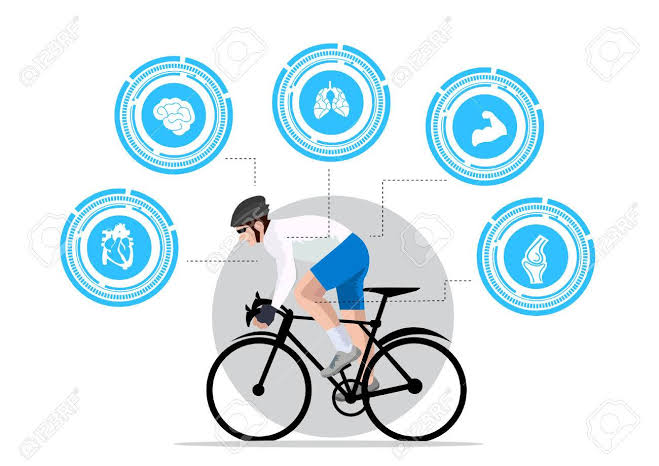
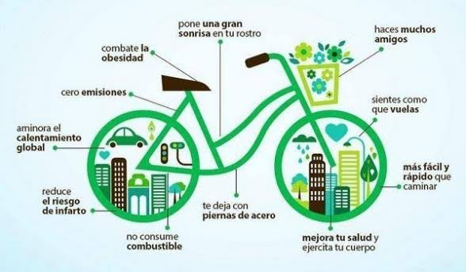

Beneficios para la salud
Montar en bicicleta es una excelente forma de hacer ejercicio cardiovascular. Ayuda a fortalecer el corazón y los pulmones, y a reducir el riesgo de enfermedades cardíacas y accidentes cerebrovasculares. Además, es una actividad de bajo impacto que no daña las articulaciones como otros deportes.
Beneficios para el medio ambiente
Las bicicletas no emiten gases contaminantes ni contribuyen al cambio climático. Al utilizarlas en lugar de coches o motos, se reduce la contaminación del aire y se disminuye la huella de carbono. Además, ocupan menos espacio en la calle y son más eficientes en términos de consumo de energía.
Beneficios económicos
Montar en bicicleta es mucho más barato que conducir un coche o tomar transporte público. No se necesita gasolina, no hay que pagar por estacionamiento ni por boletos de transporte. Además, las bicicletas son más duraderas y requieren menos mantenimiento que los coches.